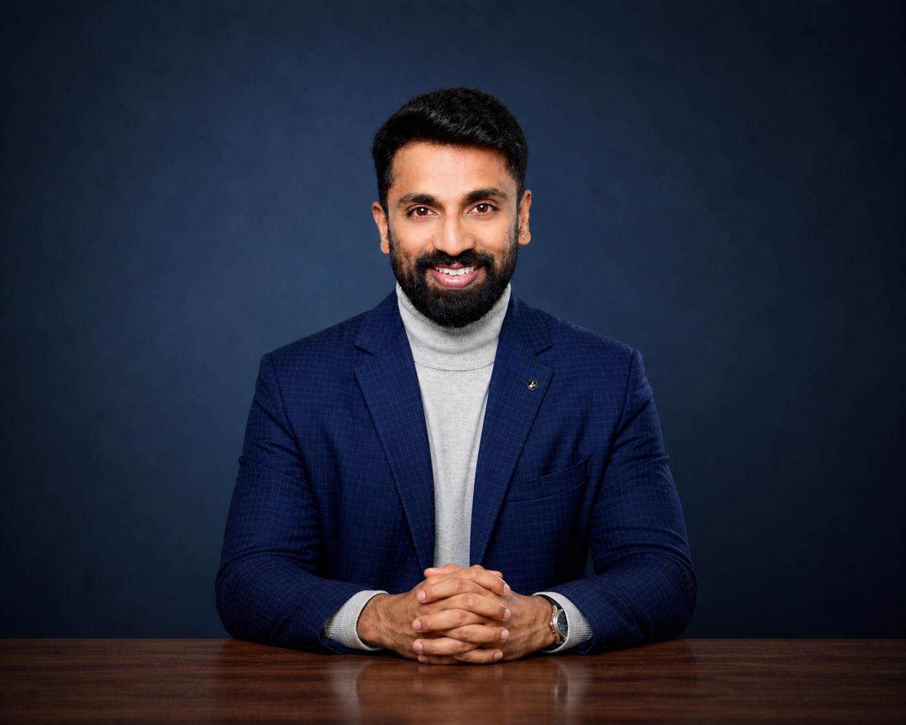

Who's Home
End-to-end product management for a consent-based connected-home experience, from discovery and roadmap through commercial planning, launch and evolution.
Vodafone UKLaunched
I bridge product strategy, AI transformation and international execution — connecting customer needs, commercial priorities and technical complexity to build meaningful digital experiences.
My career spans software engineering, quality leadership, product integration, technical product ownership and full-lifecycle product management — across consumer experiences and enterprise platforms.
The ability to translate ambitious ideas into executable roadmaps, align diverse teams and turn complex dependencies into customer-facing outcomes.
My experience crosses connected homes, mobile connectivity, digital partnerships, enterprise APIs, and emerging AI-enabled products.
Customer-centered product discovery and prioritization. Commercial ownership and vendor collaboration. Agile delivery and stakeholder alignment. Launch execution and continuous improvement.
My leadership combines technical fluency, pragmatic decision-making and an international perspective shaped by teams and markets across Europe, Asia and the Middle East.
Four different expressions of product leadership: launching, scaling, integrating and innovating.
End-to-end product management for a consent-based connected-home experience, from discovery and roadmap through commercial planning, launch and evolution.
Vodafone UKLaunchedCross-market connectivity experience spanning eSIM, device onboarding, integrations and customer-facing activation journeys across European and other markets.
Multi-marketIntegrationTechnical product ownership and integration leadership in a large enterprise API ecosystem connecting customer journeys with business-critical systems.
400+ platform APIsEnterpriseLed agile partner-backend and consumer-system API integration to enable an entertainment proposition for Dutch Vodafone customers.
NetherlandsTPO leadershipLed product discovery, experimentation, development coordination and validation of an emerging connected-home experience. Product identity, technical details and trial results withheld for confidentiality.
ConfidentialPre-launchFounded and led AI Chapters across two consecutive roles, advancing team AI literacy, practical adoption and workflow automation. Explored enterprise AI governance through International Executive MBA research.
AI leadershipHSG researchA curated record of product ownership, integration, quality leadership and associated launches. Each item clearly distinguishes my contribution.
Portfolio includes public product announcements associated with my roles. An announcement alone does not establish sole ownership. Product-specific confidential data and unreleased details are intentionally excluded.
My focus extends to how organizations build capability, make decisions and deliver sustainable value.
Established AI Chapters in two consecutive roles to improve AI fluency, identify practical automation opportunities, support teams adopting AI-enabled ways of working, and improve product delivery practices.
International Executive MBA research on enterprise AI governance and the balance between human-led, hybrid and AI-led decision models.
Product roadmaps, budgets, cost-versus-forecast tracking, vendor negotiations, executive communication and formal delivery closure.
API integration, connected devices, digital services and complex multi-system environments. Experience supporting international stakeholders, suppliers and delivery teams.
Historical project-excerpt metrics; attribution, measurement context and publication clearance should be verified before public deployment.
Each chapter added a new dimension: quality, integration, ownership, commercial judgment and innovation.
ITKombinat · Vodafone Smart Home · Full-lifecycle product leadership and AI adoption initiatives; employment followed by contracting.
mVISE · Vodafone Group · Digital partnerships, eSIM transfer, technical roadmaps and agile delivery.
mVISE · Vodafone Group · Enterprise integration, connected-device services, eSIM and partner ecosystems.
Tata Consultancy Services · Vodafone Group · API quality, automated testing, enterprise delivery and cross-functional management.
Tata Consultancy Services and earlier enterprise projects · India, Dubai and Philippines.
International Executive MBA · Switzerland · 2026
PRINCE2 · Professional Scrum Master I · Product School product management certifications.
German citizen with experience working across international business environments. English and German professional communication; Hindi and Telugu.
Open to conversations about senior product leadership, AI transformation, enterprise platforms and ambitious international technology opportunities.
Public contact intentionally limited to professional channels.